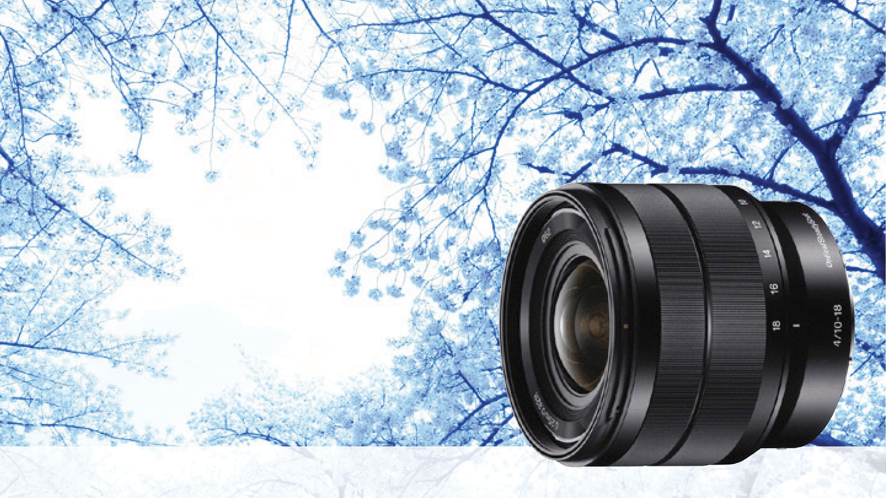

Fast, high performance prime lens. Perfect for
portraiture and a range of other subjects, the F1.8
maximum aperture and optical image stabilisation
provide impressive picture quality, even in low-light.

SEL1018
From expansive landscapes to striking interior
shots with dramatic perspective, this super wide-angle
zoom lens will capture it all with total precision.